1. Overview
Audit Type:
Technical SEO Audit
Platform:
GitHub Pages (Static Website)
This audit evaluates the technical SEO configuration of a personal portfolio website developed to showcase technical SEO and web development projects.
The objective of this audit is to analyze technical elements that influence search engine crawling, indexing, and ranking performance.
The audit examines:
- Website performance and Core Web Vitals
- Crawlability and indexability
- HTML metadata
- Heading hierarchy
- Image SEO
- Internal linking
- Structured data implementation
- robots.txt configuration
- XML sitemap structure
2. Audit Methodology
The website was evaluated using a structured technical SEO process combining automated diagnostic tools and manual source code inspection.
Tools Used
| Tool | Purpose |
|---|---|
| Chrome Lighthouse | Performance and technical diagnostics |
| PageSpeed Insights | Core Web Vitals testing |
| Google Search Operator | Indexability verification |
| Schema Validator | Structured data validation |
| Manual HTML Inspection | Metadata and markup analysis |
2.1 Performance Audit
Screenshot
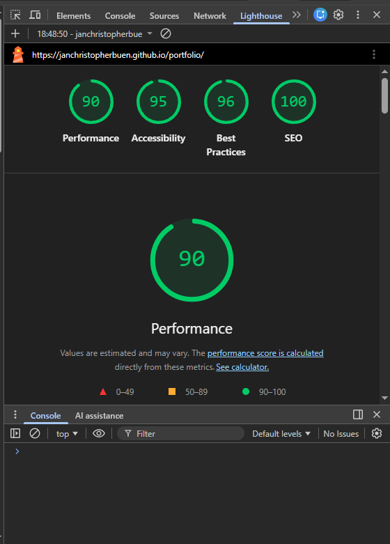
Results
| Category | Score |
|---|---|
| Performance | 90 |
| Accessibility | 95 |
| Best Practices | 96 |
| SEO | 100 |
Analysis
The Lighthouse audit shows strong technical performance. The high scores indicate:
- Lightweight static architecture
- Minimal JavaScript overhead
- Optimized CSS delivery
- Efficient resource loading
Because the site is hosted on GitHub Pages, it benefits from fast server response times and simplified rendering.
2.2 Core Web Vitals Analysis
Screenshot
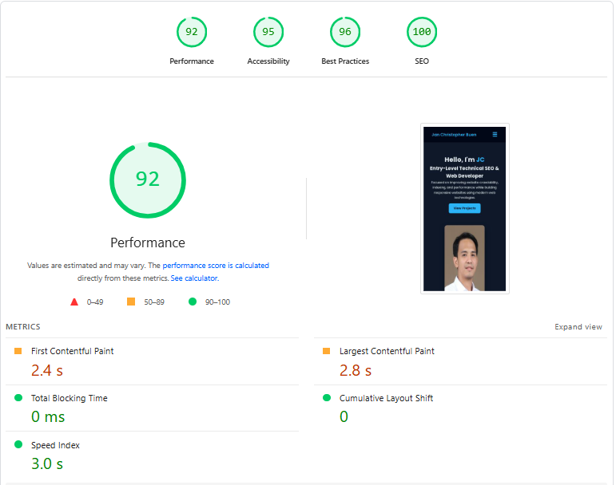
Metrics
| Metric | Result | Target | Status |
|---|---|---|---|
| First Contentful Paint | 2.4s | <2.5s | Pass |
| Largest Contentful Paint | 2.8s | <2.5s | Needs Improvement |
| Total Blocking Time | 0ms | <200ms | Excellent |
| Cumulative Layout Shift | 0 | <0.1 | Excellent |
Analysis
Largest Contentful Paint slightly exceeds Google's recommended threshold.
The likely cause is the hero image loading above the fold.
Recommendation
- Compress hero image
- Convert images to WebP format
- Optimize image delivery
2.3 Indexability Verification
Screenshot
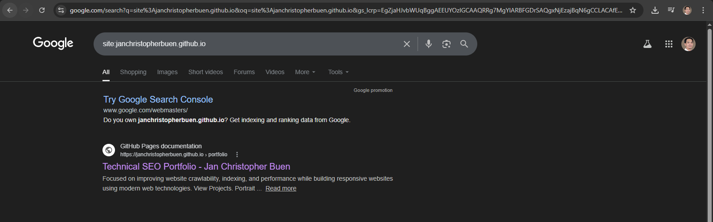
Test Method
Google search operator used:
site:janchristopherbuen.github.ioAnalysis
Manual inspection of the HTML <head> section confirmed that no noindex directive is present.
Example metadata found:
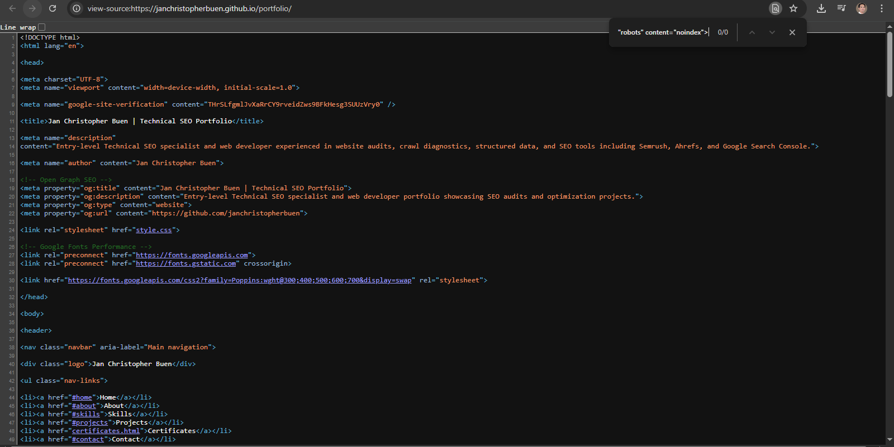
Conclusion
The absence of noindex directives confirms that the page is eligible for indexing by search engines.
2.4 Metadata Inspection
Screenshot
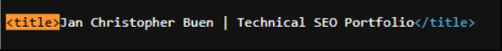
Title Tag
Jan Christopher Buen | Technical SEO PortfolioMeta Description
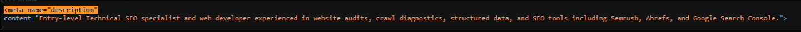
Analysis
| Element | Status |
|---|---|
| Title tag | Optimized |
| Meta description | Slightly long |
| Keyword targeting | Present |
Recommendation
Shorten the description to approximately 150–160 characters.
Example optimized description:
Technical SEO portfolio showcasing SEO audits, crawl diagnostics, structured data implementation, and website optimization projects.2.5 Heading Structure Analysis
Screenshot
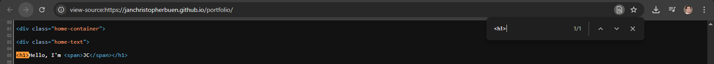
Current Structure
H1: Hello, I'm JC
H2: About Me
H2: Skills
H2: ProjectsAnalysis
The H1 heading does not contain the primary keyword Technical SEO, which weakens topical relevance.
Recommended H1
Technical SEO Specialist Portfolio – Jan Christopher BuenThis improves:
- topic clarity
- keyword targeting
- search relevance signals
2.6 Image SEO Analysis
Screenshot
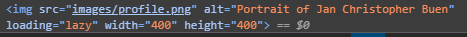
Code Example
<img src="images/profile.png"
alt="Portrait of Jan Christopher Buen"
loading="lazy"
width="400"
height="400">Analysis
The image element follows several SEO and performance best practices.
| Factor | Status |
|---|---|
| Alt attribute present | Yes |
| Lazy loading enabled | Yes |
| Width and height defined | Yes |
| Layout shift prevention | Yes |
Optimization Opportunity
Current filename:
profile.pngRecommended filename:
jan-christopher-buen-technical-seo-specialist.webpThis provides stronger relevance signals for image search.
2.7 Internal Linking Analysis
Screenshot
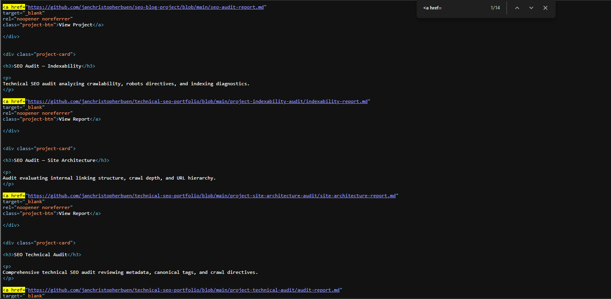
Example Links
View Project
View ReportAnalysis
The anchor text used for project links is generic and does not provide contextual relevance.
Search engines rely on anchor text to understand the content of linked pages.
Recommended Anchor Text
Examples:
SEO Blog Optimization Case Study
Indexability Audit Report
Technical SEO Site Architecture Audit2.8 Structured Data Validation
Screenshot
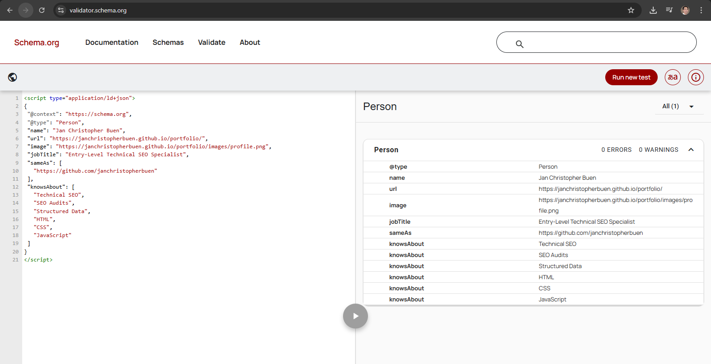
Schema Type Implemented
PersonValidation Result
0 Errors
0 WarningsExample Schema
{
"@context": "https://schema.org",
"@type": "Person",
"name": "Jan Christopher Buen",
"jobTitle": "Entry-Level Technical SEO Specialist",
"url": "https://janchristopherbuen.github.io/portfolio/"
}Analysis
The structured data successfully defines the entity associated with the portfolio website and improves search engine understanding of the website owner.
2.9 Robots.txt Analysis
Screenshot

robots.txt
User-agent: *
Allow: /
Sitemap: https://janchristopherbuen.github.io/portfolio/sitemap.xmlAnalysis
The robots file correctly:
- allows search engine crawling
- references the XML sitemap
No crawl restrictions were detected.
2.10 XML Sitemap Review
Screenshot

Sitemap Entries
/portfolio/
/portfolio/certificates.htmlAnalysis
The sitemap provides search engines with a list of indexable URLs, improving crawl efficiency and content discovery.
3. Issues Identified
| Issue | Impact | Severity |
|---|---|---|
| H1 missing keyword | Weak topical relevance | Medium |
| Generic anchor text | Weak internal linking signals | Medium |
| Largest Contentful Paint slightly slow | Slower above-the-fold content load | Low |
| Meta description length | Possible SERP truncation | Low |
| Image filename generic | Weak image SEO signals | Low |
Audit Summary
| Category | Result |
|---|---|
| Performance | Excellent |
| Technical SEO | Strong |
| On-Page SEO | Good |
| Structured Data | Excellent |
| Crawl Configuration | Correct |
Overall Technical SEO Score
89 / 100
The website demonstrates strong technical foundations with minor opportunities for improvement related primarily to semantic markup and internal linking signals.
4. Fix Implementation
Based on the issues identified during the audit, several optimizations were implemented to improve technical SEO signals, semantic clarity, and performance.
4.1 H1 Heading Optimization
Issue
The original H1 heading did not contain the primary keyword and did not clearly describe the page topic.
Original heading:
Implementation
The heading was updated to include the primary keyword Technical SEO Portfolio and the website owner's name.
Updated heading:
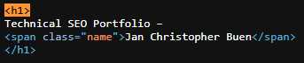
Result
This improvement strengthens:
- keyword relevance
- topical clarity
- search engine understanding of the page topic
4.2 Meta Description Optimization
Issue
The original meta description exceeded the recommended length of 160 characters, which could lead to truncation in search results.
Original description:
Implementation
The meta description was shortened and refined to emphasize the core focus of the portfolio.
Updated description:
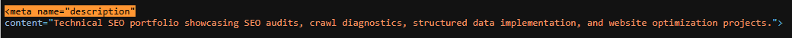
Result
This change improves:
- search result readability
- click-through rate potential
- keyword targeting
4.3 Anchor Text Optimization
Issue
Project links originally used generic anchor text such as "View Project" or "View Report".
Example:
Implementation
Anchor text was updated to provide descriptive context about the linked content.
Updated example:
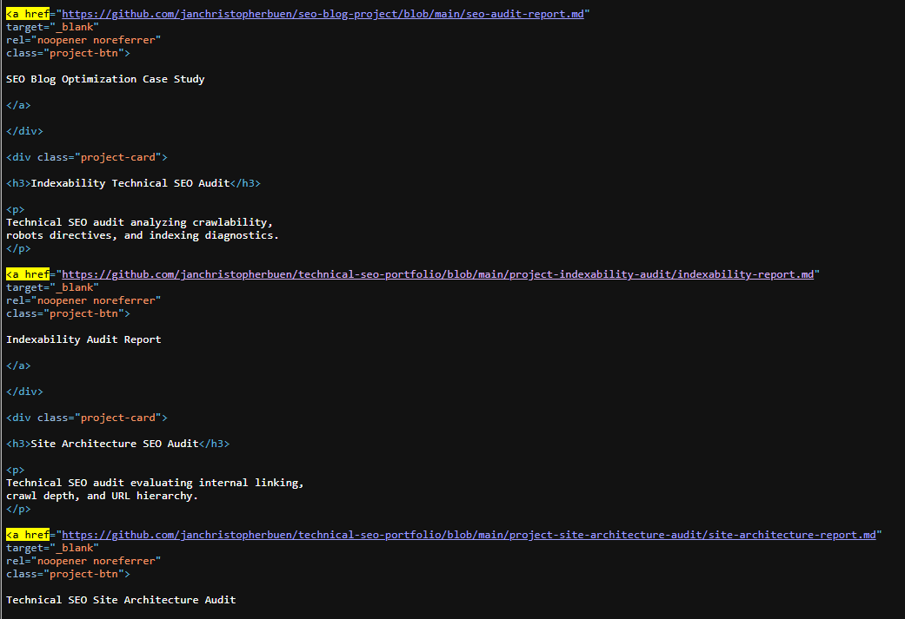
Result
Improved anchor text provides:
- stronger contextual signals
- better internal linking relevance
- improved content discoverability
4.4 Image SEO Optimization
Issue
The original image filename was generic.
Original filename:
Implementation
The image filename was updated to include descriptive keywords.
Updated filename:
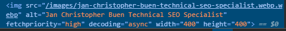
Optimized profile image using WebP format, descriptive filename, and keyword-focused alt text to improve SEO, accessibility, and page performance.
Result
Benefits include:
- improved image search relevance
- stronger semantic signals
- preserved page performance
4.5 Canonical Tag Implementation
Issue
The page originally lacked a canonical tag.
Implementation
A canonical tag was added within the HTML <head> section.
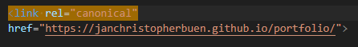
Result
The canonical tag ensures that search engines recognize the preferred URL for the page and prevents potential duplicate indexing issues.
4.6 Open Graph URL Correction
Issue
The Open Graph URL originally referenced the GitHub profile instead of the portfolio page.
Original
<meta property="og:url" content="https://github.com/janchristopherbuen">Implementation
Updated Open Graph URL:
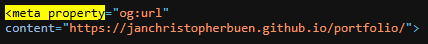
Result
This ensures correct sharing previews when the portfolio link is shared on social platforms.
Implementation Summary
| Optimization | Status |
|---|---|
| H1 keyword optimization | Implemented |
| Meta description refinement | Implemented |
| Anchor text improvements | Implemented |
| Image filename optimization | Implemented |
| Canonical tag added | Implemented |
| Open Graph URL corrected | Implemented |
These improvements strengthen both technical SEO signals and semantic relevance, contributing to improved search visibility and user experience.